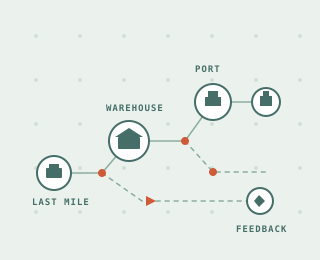

FALL 2025 / COURSE ARCHIVE
A year of ideas.
A connected field.
Explore the lecture context and student reflections from Introduction to Smart Logistics, taught by Prof. Wai Kin (Victor) Chan and guest faculty. The 2025 syllabus lists seven sessions; Lectures 01–06 now bring together lecture context and anonymous class synthesis.

ARCHIVE / LECTURE 01 · 15 SEPTEMBER 2025
Digital Transformation of Modern Supply Chains
History, AI readiness and three operating cases meet 30 anonymous homework reflections. Follow the cohort’s learning priorities, keyword signals and differing views of logistics automation.
Explore Lecture 012025 lecture register
01 — 0701Digital Transformation of Modern Supply ChainsProf. Wai Kin (Victor) Chan · 15 SEPT 2025OPEN ↗02Smart Transportation and DistributionProf. Mingyao Qi · 22 SEPT 2025OPEN ↗03Planning and Operations of Intelligent Warehousing SystemsProf. Peng Yang · 29 SEPT 2025OPEN ↗04Urban Low-Altitude Logistics SystemsProf. Xinlei Chen · 13 OCT 2025OPEN ↗05High-Precision Positioning Technology and Smart LogisticsProf. Kai Zhang · 20 OCT 2025OPEN ↗06Smart City Transportation and Autonomous DrivingProf. Bokui Chen · 27 OCT 2025OPEN ↗
07Planning and Operation of Smart Container TerminalsProf. Canrong Zhang · 03 NOV 2025TO COME
Dates and speakers follow the supplied Fall 2025 syllabus. 6 October was a holiday. Later lecture syntheses will open as their materials are added.